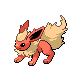
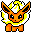
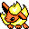
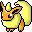
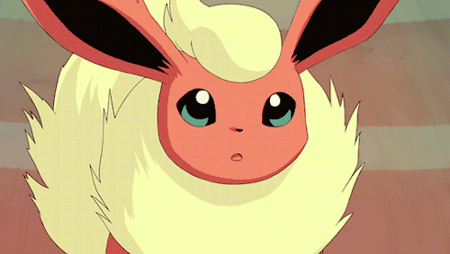
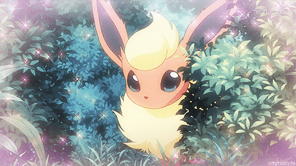
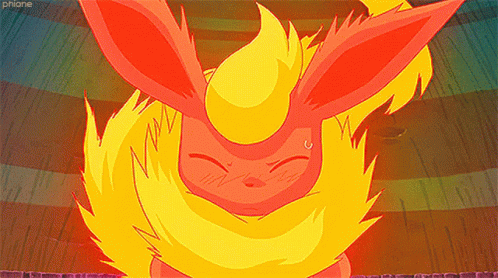

Flareon (ブースター)
"The Flame Pokémon"
If it inhales deeply, that's a sign it's about to attack. Prepare to be hit by flames of over 3,000 degrees Fahrenheit!


I feel like in terms of Eeveelution love, Flareon has always been the odd one out; to GameFreak and fans alike. Sure it has it's place in the original Kanto Trio, but it's just similar enough to Eevee that I feel it often gets overlooked in favor of it's other two siblings (let alone Eevee itself!). I've always loved Flareon, though! I love it's soft fluffy fur, it's spiky ears, and the shape language implemented into it's design. It's tail is one big fireball! Flareon has been one of my favorite evolutions ever since childhood, though it often (fittingly) fights with Glaceon for the number one spot. I collected a few Flareon toys in my younger years and none of Glaceon, though, so it has that over it's siblings head.
This is a small collection as of right now. The prospect of trying to collect merchandise of an eeveelution - let alone one of the original ones - is... intimidating to say the least. However, because most of this consists of childhood toys, this is one of my collections with the most sentimental value in each part of it.
Plushes 
Figures 
Bootlegs 
Misc
go back?
  
Plushes

Comfy Friends Plush
Made by: Pokemon Center
Released: January 2023
Bought from: Pokemon Center
This is the newest released item in this collection, and absolutely my favorite. This is probably my favorite Flareon plush that I know of as of right now and it's quickly grown into one of my favorite plushes I own. The texture is so so soft, silky, and he's so big and huggable! I sleep with this plush every night, carry him with me to therapy, and he helps me calm down when I feel anxious. His tail in particular is big and squeezable, and my head fits snugly between his two ears. To top it all off, my friends Zilly and Clyde also got the Jolteon and Vaporeon plushes in this trio respectively - so we all get to match with our favorite of the 3! It makes me sooo happy! I hope we get more and more of this plush line!

Mini Sitting Plush
Made by: Pokemon Center
Released: ??? 2013
Bought from: Japanese Mercari
This little guy is very cute! I typically don't gravitate towards plushes that portray tufts of fur using faux fur while keeping the rest pure fabric like this, but this one makes me reconsider my stance on that. I got this plush in a lot when ordering one of my Fennekin plushes, along with some others. I'm glad that they kept his spiky ears on a plush this small.
Back to top
Figures

2005 Monster Collection figure
Made by: TOMY
Released: ??? 2005
Recieved by: Family gift, eBay?
This is the first of my childhood toys, and is the one with the most sentimental value in this collection. When I was a child, I had an intense fixation on obtaining two specific Pokemon figures; one of which being this one. This was because of a specific YouTuber, who eventually happened to be one of my friends in the Forest of Peace (I'll add a link here later when I make the page for it), NeonRay3. According to his Pokefarm I last contacted him at, he now works for Nintendo of America! I looked up to him very much as a young child, and I appreciate him being kind to me even years later. Neon, if you ever read this, hello! I loved his Eevee Evolution Chronicles series so much, and this Flareon was the figure that stood out to me the most. On top of all of this - if my faulty memory serves me correctly, this figure was a gift from my late uncle. For all of these reasons, I'll always treasure this figure as one of my most special treasures.
Back to top
Bootlegs
"1997 Monster Collection" Figure
Obtained: Childhood
Definitely the easier of these Tomy figures for bootleggers to replicate! This one was also a gift from my late uncle, in a set of bootlegged eeveelution figures. I didn't even notice or care as a child of course, and I was the happiest I could be. Even now, I still have a soft spot for those figures.
"Pokedoll" Plush
Obtained: Childhood ... ?
Being entirely honest, I don't remember at all where I got this bootleg Pokedoll. Part of me wants to say I got it for Christmas one year, but I really don't know... all I know is I've had it as long as I can remember. There's not too much to say about this one, really. Actually, the fabric that it's made out of is strangely reflective - when I have blue LED lights on, it doesn't absorb light and appear to "change color" like other fabrics do. I think it's fitting for a Flareon to glow like that!
Back to top
Misc.
TCG Tin
Obtained: 2/15/23
I got this one at my local thrift store! To be honest, I just needed a tin to hold my Digimon TCG cards, lol. But I was very happy to see one plastered with Flareon on all sides. There are a lot of these tins to collect, but I'm not too concerned about this type of thing...

Rubber Charm
Obtained: 2017
I'm fairly certain that I got this charm at a local convention with a friend in 2017. It's pretty banged up, so I must have carried it around quite a lot. I don't know the source of this art, but it's very cute!